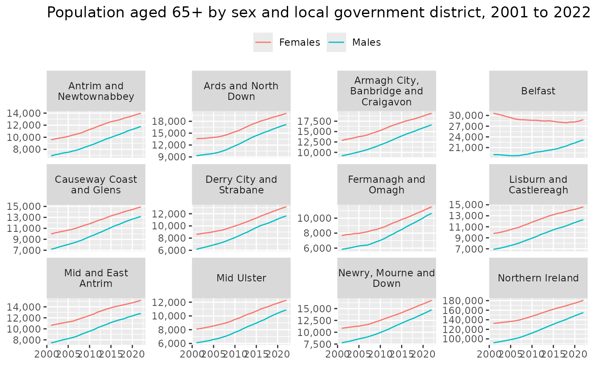

Overview of the NISRA Data Portal API
This package interacts with the NISRA Data Portal, which allows users to access data produced by the Northern Ireland Statistics and Research Agency (NISRA) in a variety of machine-readable formats, and to interactively query, plot, or map the data. The NISRA Data Portal is built on PxStat, a dissemination system developed by the Central Statistics Office (CSO) of Ireland. Guidance on the NISRA Data Portal is available here.
Searching for data
We can search for data using nisra_search(), which gives
information on available datasets such as when it was last updated or
what variables are in the data.
library(nisrarr)
x <- nisra_search()
head(x)
#> # A tibble: 6 × 5
#> dataset_code dataset_label frequency dataset_dimensions updated
#> <chr> <chr> <chr> <list> <dttm>
#> 1 VEHICLEACCESSI… Accessibilit… Financia… <chr [3]> 2025-04-02 14:03:51
#> 2 INDTRUSTMEDIAEQ Indicator - … Year <chr [3]> 2025-04-03 11:54:54
#> 3 INDTRUSTASMBEQ Indicator - … Year <chr [3]> 2025-04-03 11:54:02
#> 4 ARTCULEQ Arts and Cul… Financia… <chr [3]> 2025-04-08 09:30:00
#> 5 CULTIDEQ Respected Cu… Year <chr [3]> 2025-04-08 09:30:00
#> 6 FADPS Northern Ire… Year <chr [3]> 2025-04-10 11:17:42If we don’t know the exact name of the dataset we’re interested in, we can search using a keyword that appears in the label or a set of variables that we need:
nisra_search(keyword = "employ")
#> # A tibble: 9 × 5
#> dataset_code dataset_label frequency dataset_dimensions updated
#> <chr> <chr> <chr> <list> <dttm>
#> 1 EMPVACHSCT Employment vac… Financia… <chr [3]> 2025-05-07 09:30:00
#> 2 EMPVACAA Employment vac… Financia… <chr [3]> 2025-05-07 09:30:00
#> 3 EMPVACLGD Employment vac… Financia… <chr [3]> 2025-05-07 09:30:00
#> 4 EMPVACDEA Employment vac… Financia… <chr [3]> 2025-05-07 09:30:00
#> 5 KS605NI Industry of Em… Census Y… <chr [5]> 2025-05-08 09:30:00
#> 6 INDEMPRATELGD Indicator - Em… Year <chr [3]> 2025-05-08 09:30:00
#> 7 INDEMPRATEAA Indicator - Em… Year <chr [3]> 2025-05-08 09:30:00
#> 8 QEJOBS01 Quarterly Empl… Quarter <chr [3]> 2025-03-20 09:30:00
#> 9 QEJOBS02 Quarterly Empl… Quarter <chr [4]> 2025-03-20 09:30:00
nisra_search(variables = "Free School Meal Entitlement")
#> # A tibble: 7 × 5
#> dataset_code dataset_label frequency dataset_dimensions updated
#> <chr> <chr> <chr> <list> <dttm>
#> 1 DESLSAAA School Leavers … Academic… <chr [4]> 2025-05-29 09:30:00
#> 2 DESLSAHSCT School Leavers … Academic… <chr [4]> 2025-05-29 09:30:00
#> 3 DESLSALGD School Leavers … Academic… <chr [4]> 2025-05-29 09:30:00
#> 4 DESLSDAA School Leavers … Academic… <chr [4]> 2025-05-29 09:30:00
#> 5 DESLSDHSCT School Leavers … Academic… <chr [4]> 2025-05-29 09:30:00
#> 6 DESLSDLGD School Leavers … Academic… <chr [4]> 2025-05-29 09:30:00
#> 7 DESLSADEA School Leavers … Academic… <chr [4]> 2025-06-05 09:17:36Fetching data
We can use nisra_read_dataset() with the dataset code we
found above to request the dataset from the API and convert it to a
tibble. Every dataset will have a Statistic column and a
value column, a column for the time period, and any other
variables included in the breakdown:
mye <- nisra_read_dataset("MYE01T04")
head(mye)
#> # A tibble: 6 × 6
#> Statistic Year Local Government Dis…¹ Broad age band (4 ca…² Sex value
#> <chr> <chr> <chr> <chr> <chr> <dbl>
#> 1 Mid-year popu… 2001 Antrim and Newtownabb… Age 0-15 Fema… 14076
#> 2 Mid-year popu… 2001 Antrim and Newtownabb… Age 0-15 Males 14877
#> 3 Mid-year popu… 2001 Antrim and Newtownabb… Age 0-15 All … 28953
#> 4 Mid-year popu… 2001 Antrim and Newtownabb… Age 16-39 Fema… 22556
#> 5 Mid-year popu… 2001 Antrim and Newtownabb… Age 16-39 Males 22771
#> 6 Mid-year popu… 2001 Antrim and Newtownabb… Age 16-39 All … 45327
#> # ℹ abbreviated names: ¹`Local Government District`, ²`Broad age band (4 cat)`
#> # Source: Mid-year population estimates
library(dplyr)
#>
#> Attaching package: 'dplyr'
#> The following objects are masked from 'package:stats':
#>
#> filter, lag
#> The following objects are masked from 'package:base':
#>
#> intersect, setdiff, setequal, union
library(ggplot2)
mye <- mye |>
filter(
`Broad age band (4 cat)` == "Age 65+",
Sex %in% c("Females", "Males")
) |>
mutate(Year = as.numeric(Year))
ggplot(mye, aes(Year, value, colour = Sex)) +
geom_line() +
scale_y_continuous(labels = scales::label_comma()) +
facet_wrap(
vars(`Local Government District`),
scales = "free_y",
labeller = label_wrap_gen(width = 18)
) +
labs(
title = "Population aged 65+ by sex and local government district, 2001 to 2022",
x = NULL,
y = NULL,
colour = NULL
) +
theme(legend.position = "top")
Metadata
nisrarr has some functionality for working with metadata. We can use
the get_metadata() function on any dataset we download from
the API to fetch some of the common or useful fields, such as whether
these are official statistics, the subject of the statistics, and
contact information:
get_metadata(mye)
#> Label: Mid-year population estimates
#> Subject: Population
#> Type: Official statistics
#> Updated: 2025-05-08T9:30:00.000Z
#> Note: [b]Description of Data[/b]
#>
#> Notes:
#>
#> 1. The estimates are produced using a variety of data ...
#> Contact: Population Statistics
#> Contact email: census@nisra.gov.uk
#> Contact phone: +44 (0)28 90255156
#> Copyright: Crown Copyright (https://www.nisra.gov.uk/crown-copyright)If we need to work with any of these fields programmatically, we can
fetch specific fields using get_metadata_field():
updated <- get_metadata_field(mye, "updated")
updated |>
lubridate::ymd_hms() |>
prettyunits::time_ago()
#> [1] "29 days ago"Caching
By default, nisrarr caches data fetch from the data portal API to
speed up repeatedly fetching the same data. Results are cached for 1
hour then removed, or the cached values can be ignored by setting
flush_cache = TRUE in nisra_search() or
nisra_read_dataset(). Caching is useful when working
interactively, but it is better to fetch data directly if it’s part of a
larger script or pipeline.